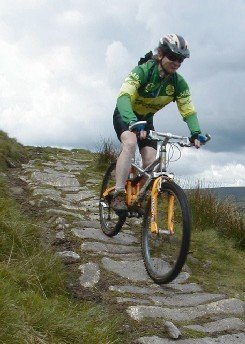

Thanks to Tony Raven, Matt Wenham, and Jon Wyatt for the pictures used here.
Matt Wenham was hosting one of his Bank Holiday MTB weekends in Calderdale Valley in the South Pennines. It had been a good weekend of riding. It was the first serious workout I'd given my new full suspension bike, a Marin Rift Zone, and I'd ridden better than ever before. Was it the bike? Was it me? I don't know, but I found myself riding things I'd never done before. My concentration was good most of the time, and I was doing well at scoping out lines and holding the bike on them, especially on the uphills. Not that I'm at all fast, mind, but I was spending more time on the bike and less time bumping my wheels into random rocks.
this'll get your heart pumping! For the Bank Holday Monday Matt had planned a special treat: the Full Monty. Yes! 45 miles of technical Pennine tracks, replete with lung-busting technical uphills, flats made unridable with masses of rock, and downhills with tricky dropoffs. It sounded good, but it wasn't for me. I know my limits. The Half Monty was more my style. Matt suggested a route of about 30 miles (so more of a 2/3 Monty, really) and Vince volunteered to lead it. We were all set.
On the day Shaun's group were taking their time getting ready, so Matt's group started out. We headed out of Walsden on a road that goes roughly east, up to North Hollingworth Farm. (I'll try to describe this route well enough that you can follow it on a map. The map to use is OS Outdoor Leisure 21.) This is an incredibly steep tarmac climb. At the top it's 1 in 4, and I usually have trouble keeping my front wheel on the ground. I was tempted to get off and walk, especially as three day's riding had made my legs heavy, but I'm stubborn enough that I stayed on the bike, sweating it out.
At the top, at the farm, we turned left onto a northbound bridleway. This is fairly smooth dirt for a bit, but soon we got onto the dreaded Packhorse Stones. Quite some time ago, large slabs were put down to stop the erosion caused by horses' feet. The slabs remain to prevent erosion and challenge the biker.
They're not so bad descending, but on a sharp incline the unevenness or occasional missing slab can be too much for a biker who's just managing the lungpower to get up the hill. I didn't do as well here as I have before. I've found that If I have a bit of spare energy I can usually get through the tricky bits by concentrating and putting out a bit more power, but three days' riding had taken their toll and my legs ached too much to put out the effort.
me riding up to Gaddings Dam Finally, we were at Rake End, the top of the climb. Matt had suggested continuing on the Packhorse Trail, riding along a road for a bit, and then picking up London Road at Mankinoles. But I wanted a real challenge. At my request we turned east and followed a footpath up to Gaddings Dam. I surprised myself by riding most of this, and reached the top feeling good. I had warmed up by this time, and the ache had started to leave my legs.
The ride along the top of the north side of the dam was as fun as ever, requiring focus to keep the bike on the narrow ruts and choose the correct track to avoid the deep puddles. We followed the track as it left the dam. This track is mostly level, and it starts out ridable, livened up by a healthy dose of rocks to dodge. Eventually though the rocks take over, and ridable sections end up being short interludes between heaps of stones. (The way is clear on the ground, but I'm not sure which of the many footpaths on the map it is.)
I tried to ride one section I hadn't attempted before: it was a narrow track across the top of a gully, preceded by a sharp turn. I managed the turn and got partway across the gully, but didn't manage to keep the bike in the slightly recessed track. My front wheel hit the edge, and the bike stopped. I started to fall sideways. Now, I'm pretty good at landing on my feet, so I unclipped and started looking for a place to put my foot down. But I was falling to the left, into the gully, and there was nothing there. The bike and I fell. I rolled head over heels a couple of times and then stopped. I was lying flat on some very thick grass. My bike was below me, chainrings towards me. My bum was right next to the chainset, and I felt a small pain in my bum where the teeth had ripped a small hole and scratched me. Later my boyfriend was very amused to learn that I'd scratched my bum with my chainrings... Other than this I was uninjured, so I hauled myself and my bike up and continued on.
one of the more ridable bits of track Eventually the trail joined the Pennine Way on the way to Stoodley Pike. This is a good section of trail. It varies from extremely difficult to easy if you're good at dodging rocks. The ominous clouds that had been threatening us for awhile had given way to wet hail, and we rode on, the icy particles bouncing off our helmets. At least we didn't get too cold: the day had started off quite cool so we were prepared.
This kind of weather can be very demoralizing, and it was too much for Arthur, a roadie who's just gotten a MTB. Despite being much more fit than I am, he was walking even more than I was, and the hail was getting him down even more. He said he couldn't concentrate, couldn't see, and so he bailed, taking the Calderdale Way down to the road and thence back to Matt's place. I was trying to be positive: I'd noted how every day over the weekend it had rained at one point, but had then gotten brightly sunny for the rest of the afternoon. I hoped that today would be the same, and plodded on. I managed to keep my concentration and rode reasonably well, despite the water drops on my glasses and the sleet stinging my face.
About this time we noticed Shaun's group coming along the trail, and gradually they caught up with us.
Getting to Stoodley Pike, I joined the others nestled up to it out of the wind. The sleet abated a bit, and we headed out. We took the footpath heading east from Stoodley Pike, over a stile, then north to join London Road. On one bit of this we were following a small stream down the side of the hill. There was a very nasty looking dropoff, and a narrow path to the left of it. I took the little path very slowly, but stopped when something in the rear of my bike got hung up. I looked back. It was my rear derailleur. Suddenly I recalled Matt talking about this one bit of track where several people had ripped off their rear derailleurs on a strategically placed rock. Hmmmm, maybe going slowly has its advantages.
We followed London Road (which becomes Kilnshaw Lane) eventually turning left down a steep slope and joining a part tarmac, part cobbled road to Hebden Bridge. We invaded the cafe at the train station and feasted on tea and sandwiches, about 7 miles accomplished.
Tony and John It rained a bit more while we were at the station, but cleared up. Eventually, fortified by Yorkshire tea, we headed out. Some people packed it in after the cafe, leaving only the real hard nuts who were doing the Full Monty (Shaun, Matt, and a few others), and the part nuts who were doing the Half Monty (Vince, Tony, John, and myself).
The Montyites started out together out of Hebden Bridge, up the A6033. Soon our group branched off to the left while Matt and his gang headed straight up. We came to a to a National Trust property, and we followed a broad smooth trail up through the trees, with Hebden Water to our left. The sun was shining over the treetops. Occasionally the wind would shake a few drops off the leaves, and we'd worry that the rain had started again. We told jokes to pass the time as we slowly climbed.
We passed Hardcastle Crags, then emerged from the trees, joining a wide smooth flat bridleway near Walshaw. We headed west. This was easy riding. There was a mild headwind, but bright sunshine. We chatted as we rolled along, enjoying the day. We dropped down to cross a small stream (Alcomden Water), then climbed up the other side. A couple of left turns on tarmac and we were at the Packhorse Inn, where we stopped for a bite to eat. 15 miles down, 15 to go.
Tony and I ordered food while Vince and John ate from their Camelbaks. We sat outside since there were no tables free indoors, and stretched out our legs, letting the sun warm up the black lycra. We told more jokes. Eventually we began to wonder where the food had got to: 45 minutes had gone by already. We asked and were told it would take another 10 to 15 minutes. We contemplated cancelling our orders, but decided not to: what was the rush? The weather was fine and looked like it would hold, so we waited. Eventually the food came. We ate and got going again.
More ride storiesWe headed along tarmac to the Widdop Reservoir. We rode along the south edge of this, then headed up the Gorple Gate. I remembered this from years back, from my first ride in the area. Then I was frustrated at not being able to ride what was essentially a dirt road, and I expected to do better this time.
I can't say that my expectations were met. I did ride most of it until the first switchback, but then it was hopeless. I walked the rest of the steep bit. At the top I got back on the bike and flew along the smooth but rock-infested track. We went up a small rise, then turned left (south) onto the permissive bridleway the follows Rams Clough.
permissive bridleway, wind farm in background This was fairly boggy, but quite ridable. Soon the track turned west and became a fun roller coaster of a ride through small grassy hills. I thought, this is what mountain biking is all about: out with your friends on a good day, flying along great tracks in the sunshine.
feed stop on bridleway after Lower Mount Farm Eventually we came to Cant Clough Reservoir. We followed the edge of this, then headed south, still following the permissive bridleway. The last time I was here I found this very difficult. Flat bits alternate with climbs, some quite loose, and by the time I got to the top I had about had it. This time I did much better, riding smoothly and steadily. I only had trouble with one section. It was a loose slope which got looser an steeper at one point. I told myself I was going to make it up this bit, so I poured on the power and made it up. And then, over the difficult bit, I had to stop to catch my breath: it had consumed all my reserves of energy.
Finally we went past the wind farm and joined the road (The Long Causeway). We headed southeast, following the road as it swept a bit north to follow the contours. I was beginning to feel a bit draggy here, and I dropped behind a bit.
At the point where the road returns to a straight line we turned right and down the hill. Near Lower Mount Farm we turned left onto a bridleway. This track is reasonably easy to follow on the map, as it heads gradually southeast towards Cross End. It joins up with the Calderdale Way for a bit before heading off past the golf course. It's a scenic track between stone walls, with good views of farmland. It's especially nice in August, when the heather is blooming. It is challenging in places because of deep mud.
After powering through one of these bits my little chainring started acting up. I would pedal hard, then when I was applying the most pressure the chain would cling to the chainring, pulling the rear derailleur taut. The pedals would stop turning and I would come to an abrupt halt. After a few episodes of this I resigned myself to completing the ride without the little ring.
 John on packhorse stones Eventually we came to some some packhorse stones which we rode down, then through a few gates. After the last gate you turn right to go down a wide dirt track with a few water bars through the trees. It's tempting to get up a great deal of speed on this bit and let it carry you all the way down the hill, but there's more singletrack to come. When you emerge from the trees and the dirt road bends right, you need to leave the wide track and go up the steep rocky track on the other side of the tall rock wall in front of you. This often leaves people unprepared, and they struggle to shift down while going up this steep slope.
I knew what was coming, but since my granny gear wasn't working I could only shift down to the biggest cog on the middle ring. I would only make it up if I stood up. I steeled myself and ground up, succeeding probably because I regularly ride a fixed gear bike.
Then we went down a ways, over a few small dropoffs, and past the golf course. We turned right on the road after the golf course, then left, heading east. We were still some ways above the valley, and we weren't going to lose that height on the road.
As the road turned north we turned right onto a bridleway heading east. Initially there is a wall on the left and a very steep grassy dropoff. For some reason this section of the trail really bothers Tony. Admittedly it wouldn't do you any good if you went over the edge, but the track is easy, so there's little danger off alling off.
Anyway, the track soon goes down, with vegetation to the left and right, forming a canopy overhead. There's one steep rocky dropoff here that I've never tried. This time was no exception. There's a bit more riding, then the track rises steeply and gets unridable. Normally I'd give it a go anyway, but without a granny gear I didn't even try. I pushed up to a smooth dirt track.
Vince, our fearless leader We continued right on the track, then turned right again towards a farm. The bridleway goes between a couple of buildings, and then starts THE DESCENT. On the map, this is the zig-zaggy bit between Rodwell End and the picnic area on the A646. It goes steeply down, starting with a few gentle dropoffs, then a big one. Then there's a sharp switchback, lots of difficult dropoffs, and another switchback. After this it's ridable.
I'd been here lots of times before. The first time I saw this I was sure it was completely unridable, and for many times since nothing had revised my opinion of this. I had never gotten past the first difficult dropoff: always someone would falter just ahead of me, and I'd lose my bottle.
However, the last time down there, the previous day, I'd done more of it than before. I had faltered at the first dropoff as usual, but I'd gotten back on and gone around the switchback, and gone over the first dropoff after that. Then I'd chickened out at the most difficult dropoff, but then did all the other ones after that. I had gone around the second switchback and then down the rest of the way.
That evening, over dinner, Matt mentioned the trick to doing the most difficult dropoff after the first switchback. There is a big rock, and you have to go either to the left or the right of it. You make your choice, and you do it...
This day, I was almost at the end of the Half Monty, and I was tired. I had told myself I wasn't going to try anything difficult on these switchbacks, but as I neared it I determined to make it down to the first switchback. There was no one directly ahead of me, so I had a clear run. I rode carefully, and I did it. I got to the first switchback. There I found John and Vince stopped as John wanted to have another go at the tough dropoffs.
I stopped. There was nothing to prove here, I'd done that switchback the previous day. John and Vince headed off down. I let them go, and then I went. I did the first little dropoff then came to the big rock. I decided to go left around it. I guided the bike around, and made it through that section. My concentration was good, and I kept the bike on track, gently going over the remaining tricky dropoffs. I got to the second switchback desperately not wanting to screw up after having done the difficult bits. Very slowly, I inched around. Then I was home free. I let off the brakes a bit and flew down to the picnic area. I had ridden the Rodwell End switchbacks! I was elated. We chatted for a bit, then rode back along the canal to Matt's place. I felt good all the way back: very tired, but satisfied.
When we got back we found that Matt had gotten back just a bit before we had. They'd been too tired and had left out the Gorple Gate. So the Fully Monty was only 38 miles. We had done 30, not so much less.
It was a good end to a long weekend of riding.